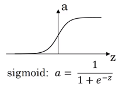
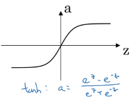
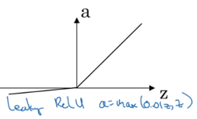

Activation functions in neural networks
Sigmoid / Logistic function

Description
- \(g(z) = \sigma(z) = \frac{1}{1+\mathrm{e}^{-z}}\); \(g'(z)=g(z)\left( 1 - g(z) \right)\)
- squashes numbers to range [0, 1]
high values near 1, high negative values near 0
- has a nice interpretation of saturating the "firing rate" of a neuron
Problems
- saturated neurons "kill" the gradient
high positive and high negative values generate ~0 gradients (flat slope)
- sigmoid outputs are not zero-centered (inneficient gradient updates)
- the exponential function is computationally expensive
Tanh

Description
- \(g(z) = tanh(z) = \frac{\mathrm{e}^{z} - \mathrm{e}^{-z}}{\mathrm{e}^{z} + \mathrm{e}^{-z}}\); \(g'(z) = 1 - g(z)^2\)
- squashes numbers to range [-1, 1]
high values near 1, high negative values near -1
- outputs are zero-centered
Problems
- saturated neurons "kill" the gradient
ReLU (REctified Linear Unit)
Description
- \(g(z) = max(0, z)\); \(g'(z)=0\) if \(z \lt 0\), \(g'(z)=1\) if \(z \gt 0\)
- does not saturate in the positive region
- very computationally efficient
- converges much faster than sigmoid/tanh in practice
Problems
- not zero-centered output
- saturated neurons in the negative region
- dead ReLUs will never activate and therefore will never update
Leaky ReLU

Description
- \(g(z) = max(0.01 z, z)\); \(g'(z)=0.01\) if \(z \lt 0\), \(g'(z)=1\) if \(z \gt 0\)
- does not saturate
- computationally efficient
- converges faster than sigmoid/tanh in practice
- will not die
Softmax function
Description
- \(g(z_j) = \frac{\mathrm{e}^{z_j}}{\sum_{k=1}^{K} \mathrm{e}^{z_k}}\) for \(j=1,2,...,K\)
- used as the output activation function in a multiclass classification problem
- is a generalization of the logistic function
- squashes a \(K\)-dimensional vector \(z\) of arbitrary real values to an other \(K\)-dimensional vector of real values, where each entry is in the range [0, 1] and all entries sum up to 1